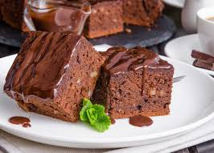

Recetas Deliciosas para Todos los Gustos

Pastel de Chocolate
Un pastel esponjoso y chocolatoso, ideal para ocasiones especiales. Su sabor intenso a chocolate y su textura suave te harán querer más.
Ingredientes
- Harina de trigo (200 g)
- Cacao en polvo (50 g)
- Azúcar (150 g)
- Huevos (2 unidades)
- Mantequilla derretida (100 g)
- Leche (200 ml)
- Polvo de hornear (1 cucharadita)
- Esencia de vainilla (1 cucharadita)
- Sal (una pizca)
Instrucciones
- Precalienta el horno a 180°C.
- En un bol grande, mezcla la harina, el cacao, el azúcar, el polvo de hornear y la sal.
- Agrega los huevos, la mantequilla derretida, la leche y la esencia de vainilla. Mezcla bien hasta que quede suave.
- Vierte la mezcla en un molde engrasado y enharinado.
- Hornea durante 30-35 minutos o hasta que al insertar un palillo, este salga limpio.
- Deja enfriar antes de desmoldar y servir. Puedes decorar con azúcar glas o crema batida.
Pollo Horneado
Este pollo horneado es jugoso por dentro y crujiente por fuera, perfecto para una comida fácil y sabrosa.
Ingredientes
- Pechugas de pollo (4 unidades)
- Ajo en polvo (1 cucharadita)
- Pimentón (1 cucharadita)
- Sal y pimienta (al gusto)
- Aceite de oliva (2 cucharadas)
- Limón (jugo de 1 unidad)
- Tomillo fresco (al gusto)
Instrucciones
- Precalienta el horno a 200°C.
- Coloca las pechugas de pollo en una bandeja para hornear.
- En un tazón, mezcla el ajo en polvo, pimentón, sal, pimienta, aceite de oliva y el jugo de limón.
- Unta la mezcla sobre el pollo y agrega ramitas de tomillo por encima.
- Hornea durante 25-30 minutos o hasta que el pollo esté bien cocido.
- Deja reposar unos minutos antes de servir.

Lentejas
Un plato saludable y lleno de proteínas, ideal para acompañar tus comidas o como plato principal para una dieta equilibrada.
Ingredientes
- Lentejas (250 g)
- Zanahoria (1 unidad)
- Apio (1 rama)
- Cebolla (1 unidad)
- Ajo (2 dientes)
- Caldo de verduras (500 ml)
- Tomate triturado (200 g)
- Sal y pimienta (al gusto)
- Aceite de oliva (2 cucharadas)
Instrucciones
- Enjuaga las lentejas y resérvalas.
- Corta la zanahoria, apio y cebolla en trozos pequeños.
- En una olla grande, calienta el aceite de oliva y sofríe la cebolla, ajo, zanahoria y apio hasta que estén blandos.
- Añade las lentejas, el tomate triturado y el caldo de verduras.
- Cubre la olla y cocina a fuego medio durante 40-45 minutos o hasta que las lentejas estén tiernas.
- Sazona con sal y pimienta al gusto y sirve caliente.
Smoothie de Frutas
Un smoothie fresco y lleno de vitaminas, perfecto para el desayuno o como merienda.
Ingredientes
- Plátano (1 unidad)
- Fresas (100 g)
- Yogur natural (150 g)
- Leche (200 ml)
- Miel (1 cucharadita)
Instrucciones
- Coloca todos los ingredientes en una licuadora.
- Licúa hasta obtener una mezcla suave y cremosa.
- Sirve inmediatamente y disfruta de este delicioso smoothie.
Hamburguesa Casera
Hamburguesas caseras jugosas y sabrosas, perfectas para una comida rápida y deliciosa.
Ingredientes
- Carne molida (500 g)
- Pan de hamburguesa (4 unidades)
- Queso cheddar (4 rebanadas)
- Lechuga (al gusto)
- Tomate (1 unidad